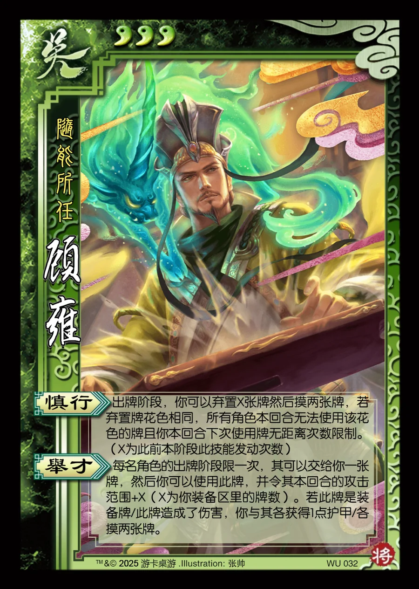

点击卡面查看大图
吴
顾雍
♥3随能所任
慎行
出牌阶段，你可以弃置X张牌然后摸两张牌，若弃置牌花色相同，所有角色本回合无法使用该花色的牌且你本回合下次使用牌无距离次数限制。（X为此前本阶段此技能发动次数）
举才
每名角色的出牌阶段限一次，其可以交给你一张牌，然后你可以使用此牌，并令其本回合的攻击范围+X（X为你装备区里的牌数）。若此牌是装备牌/此牌造成了伤害，你与其各获得1点护甲/各摸两张牌。

点击卡面查看大图
随能所任
出牌阶段，你可以弃置X张牌然后摸两张牌，若弃置牌花色相同，所有角色本回合无法使用该花色的牌且你本回合下次使用牌无距离次数限制。（X为此前本阶段此技能发动次数）
每名角色的出牌阶段限一次，其可以交给你一张牌，然后你可以使用此牌，并令其本回合的攻击范围+X（X为你装备区里的牌数）。若此牌是装备牌/此牌造成了伤害，你与其各获得1点护甲/各摸两张牌。